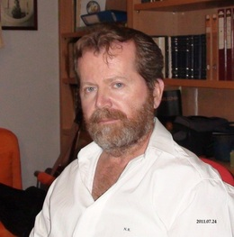
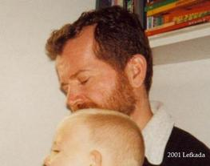

overview of hmnSngu
description::
× Mcsh-creation: {2021-01-18}
· hmnSngu\a\ (Kaseluris.Nikos born in {1959}) is the-author of https://synagonism.net.
· I\a\ am-researching KNOWLEDGE-MANAGEMENT (by machines and humans) for more than 35 years.
· my goal is the-creation of consistent, monosemantic, subjective WORLDVIEWS\b\, manifesting the-unity-of-science, readable by humans and machines, which\b\ will-help us to build a-better society.
· for example, we could-not-have a-better society if we can-not-manage a-society's-law.
· obviously DOCUMENT-management does-not work (to do knowledge-management).
· DATA-management (terminology|vocabulary|ontology) has its limits.
· CONCEPT-MANAGEMENT is the-future and this is my-work\c\.
· it\c\ includes a-theory-of-knowledge and a-theory-of-language and solves the-problem of the-relation of text|speech to knowledge.
· concepts are NOT the-units of knowlege (as we see in texts), concepts ARE the-knowledge.
· the-solution I propose on knowledge-management is STRUCTURED-KNOWLEDGE using SENSORIAL-CONCEPTS-MCS.
· BUT my life-time is finite and I need collaborative man-power to make concept-management obviously a-better method for knowledge-management.
· I need an-McsmgrHitp\d\ with a-wysiwyg editor for McsHitp-concepts that\d\ also manages the-attributes of generic-specific concept relations.
· in the-current website, I mainly publish my-worldview in Mcsh_lago.

A picture of me in {1978} (19 years young) that shows my-modelWorld at that time.
name::
* McsEngl.McshHmn000003.last.html//dirHmn//dirMcsh!⇒hmnSngu,
* McsEngl.dirMcsh/dirHmn/McshHmn000003.last.html!⇒hmnSngu,
* McsEngl.HmnSgm!⇒hmnSngu,
* McsEngl.HoKoNoUmo!⇒hmnSngu,
* McsEngl.Kaseluris.Nikos.1959!⇒hmnSngu,
* McsEngl.Kasselouris.Nikolaos.1959!⇒hmnSngu,
* McsEngl.Nikos-Kasselouris.1959!⇒hmnSngu,
* McsEngl.Synagonism!⇒hmnSngu,
* McsEngl.hmn1959Sngo!⇒hmnSngu,
* McsEngl.hmnSgm!⇒hmnSngu, {2021-01-18},
* McsEngl.hmnSinago!⇒hmnSngu,
* McsEngl.hmnSngu!=Kaseluris.Nikos.1959,
* McsEngl.hmnSngu!~McsHmn000003,
* McsEngl.human.1959.Kaseluris.Nikos!⇒hmnSngu,
* McsEngl.human.Kaseluris.Nikos.1959!⇒hmnSngu,
* McsEngl.nikkas!⇒hmnSngu,
====== lagoGreek:
* McsElln.Νίκος-Κασσελούρης.1959!=hmnSngu,
* McsElln.Νικόλαος-Κασσελούρης.1959!=hmnSngu,
* McsElln.ΚΑΣΣΕΛΟΥΡΗΣ.ΝΙΚΟΛΑΟΣ.1959!=hmnSngu,
* McsElln.Κασελούρης.Νίκος.1959!=hmnSngu,
* McsElln.Κασσελούρης.Νίκος.1959!=hmnSngu,
01_identification of hmnSngu
description::
·
name::
* McsEngl.hmnSngu/att001-identification,
* McsEngl.hmnSngu/identification,
image of hmnSngu
description::
· {2021} Ioannina (62 years old)

· {2011} Ioannina (52 years old)

· {2001} Lefkadha (42 years old)
· {1991} Washington-DC (32 years old)
· {1981} Athina (22 years old)
name::
* McsEngl.hmnSngu/att002-image,
* McsEngl.hmnSngu/image,
body of hmnSngu
description::
·
name::
* McsEngl.hmnSngu'body,
qualification of hmnSngu
description::
❀ Bs in Mathematics, University-of-Joannina, Greece {1981}.
❀ Ms in Information-Management, George-Washington-University, USA {1992}.
❀ mainly, I am a self-educated
person, especially in Philosophy, Linguistics, Economics, Sociology, History, Political-science.
❀ but, as Socrates
said very long ago, I am sure that:
"ONE thing I know, that NOTHING know" ("ἓν οἶδα ὅτι οὐδὲν οἶδα"), i.e. what I know, in relation to what I do-not-know, is "a-drop in the-ocean".
name::
* McsEngl.hmnSngu'education,
* McsEngl.hmnSngu'qualification,
job of hmnSngu
description::
❀ 2025-08-31: I retired.
❀ junior-high-school information-technology TEACHER.
name::
* McsEngl.hmnSngu'job,
product of hmnSngu
description::
❀ {2013..present} McsHitp-worldview,
❀ {2021-04-29}: Σύνταγμα-της-Ελλάδας-2019 και το-εννοιακό-μοντέλο του.
❀ {2018-12-15}: Everipedia-Eos-Dapp decentralized encyclopedia.
❀ {2018-09-15}: "char" sensorial-concept with 32,262 Unicode-characters (almost all, except CJK).
❀ {2018-03-18}: C++--programing-language sensorial-concept.
❀ {2017-11-17}: SENSORIAL-CONCEPT (modelConceptSenso|MCS) publication.
❀ {2017-11-03}: JSON-language sensorial-concept.
❀ {2017-07-02}: CHAIN-NETWORK sensorial-concept.
❀ {2017-05-21}: blockchain-network sensorial-concept.
❀ {2017-05-21}: book: Antonopoulos. Mastering-Bitcoin in Greek,
❀ {2016-08-04}: javascript--programing-language sensorial-concept.
❀ {2016-06-09}: info-title-content-tree recursive definition
❀ {2016-05-10}: browser-javascript programing-language sensorial-concept.
❀ {2015-11-22}: εννοιακό-μοντέλο του-Συντάγματος-της-Ελλάδας-2008.
❀ {2015}: People Powered Money. An important and timely book.
❀ {2015}: Keynes General-Theory CONCEPTUAL-MODEL publication.
❀ {2013..present}: synagonism.net, this website.
❀ {2011}: synagonism-mw, a-MediaWiki-skin at SourceForge.
❀ {2011}: synagonism.weebly.com, website.
❀ {2011..present}: html5.id.toc.preview, webpage-format.
❀ {2010..present}: Table-of-contents-crx, chrome-extension creates ToC on any webpage with headings.
❀ {2010}: HtmlMgr, a java wysiwyg sfi html-editor.
❀ {2002}: GreekWordCreator, java-applet.
❀ {2001}: WordForms, java-applet on greek and english grammar.
❀ {1996..2013}: my previous otenet site.
❀ {1990}: Science-Support-System, paper at George-Washington-University.
name::
* McsEngl.hmnSngu'product,
place of hmnSngu
description::
× birth-place: Arta (Fotino), GREECE,
× living-place: since {1995} I'm living in Joannina,
with the-exception that from {1999-sep-01} to {2002-jun-30} I was-living in Lefkada (Vasiliki) island.
name::
* McsEngl.hmnSngu'birth-place,
* McsEngl.hmnSngu'living-place,
* McsEngl.hmnSngu'place,
socialitation of hmnSngu
description::
·
name::
* McsEngl.hmnSngu'socialitation,
family of hmnSngu
description::
❀ I have two sons: Apostolos, born in {1997} and Aristotelis, born in {1998}.
name::
* McsEngl.hmnSngu'family,
personality of hmnSngu
interest of hmnSngu
description::
· sensorial-concepts-Mcs and Mcsmanager.
· web-programming (HTML, CSS, Javascript).
❀ SensorialBrainualConcept-Theory and its implementation SBConcept-Program (a multi-author, multi-language WORLD-VIEW Management|Integration Computer-Program) {2010-01-16}.
Since {1985} I have-devoted my life on them.
name::
* McsEngl.hmnSngu'interest,
info-resource of hmnSngu
name::
* McsEngl.hmnSngu/resource,
description::
*
structure of hmnSngu
name::
* McsEngl.hmnSngu/structure,
description::
*
DOING of hmnSngu
name::
* McsEngl.hmnSngu/doing,
description::
*
evoluting of hmnSngu
name::
* McsEngl.hmnSngu/evoluting,
{2021-01-18}::
=== McsHitp-creation:
· creation of current concept.
lifetime of hmnSngu
description::
× birth-date: {1959-02-17}
× age: 66 {2025}
× death-date:
× lifetime:
name::
* McsEngl.hmnSngu'age,
* McsEngl.hmnSngu'birth-date,
* McsEngl.hmnSngu'lifetime,
WHOLE-PART-TREE of hmnSngu
name::
* McsEngl.hmnSngu/whole-part-tree,
whole-tree-of-hmnSngu::
*
* ... Sympan.
part-tree-of-hmnSngu::
*
GENERIC-SPECIFIC-TREE of hmnSngu
name::
* McsEngl.hmnSngu/generic-specific-tree,
generic-tree-of-hmnSngu::
* ,
* ... entity.
specific-tree-of-hmnSngu::
* ,